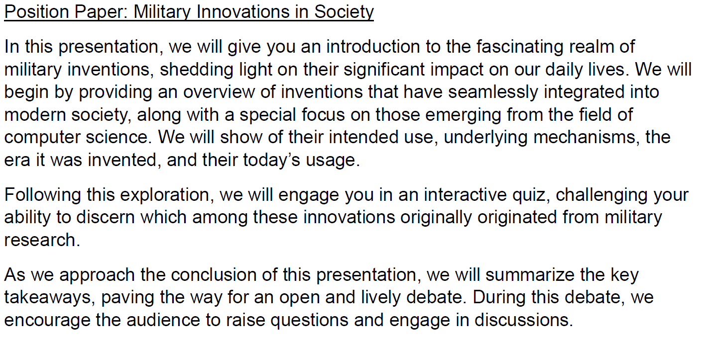

Übersicht
Das Modul „Fachenglisch“ bietet eine praxisorientierte Plattform, um Sprachkenntnisse für akademische und berufliche Zwecke zu vertiefen. Studierende lernen, präzise und effektiv auf Englisch zu kommunizieren, wissenschaftliche Texte zu analysieren und Positionen zu vertreten.
Inhalte
- Zitationsregeln und korrekter Umgang mit Quellenangaben.
- Verwendung akademischer Ausdrucksweisen und Vermeidung von Umgangssprache.
- Gap-Fill-Aufgaben zur Festigung des Fachvokabulars.
- Satzumwandlungen, um grammatikalische Fähigkeiten zu verbessern.
- Erstellung und Strukturierung eines Position Papers.
- Entwicklung und Vortrag eines Themas zu einem selbst gewählten Thema mit IT-Bezug.
Ablauf
Erster Teil: Übungseinheit
- Bearbeitung von Aufgaben wie Gap-Fill, Textanalyse oder Satzumwandlungen.
- Diskussion und Besprechung zur Klärung von Unklarheiten und Vertiefung der Inhalte.
Zweiter Teil: Präsentationen
- Zwei Teilnehmende halten ihre Vorträge.
- Diskussion und Feedback durch die Gruppe.
Beispiel
